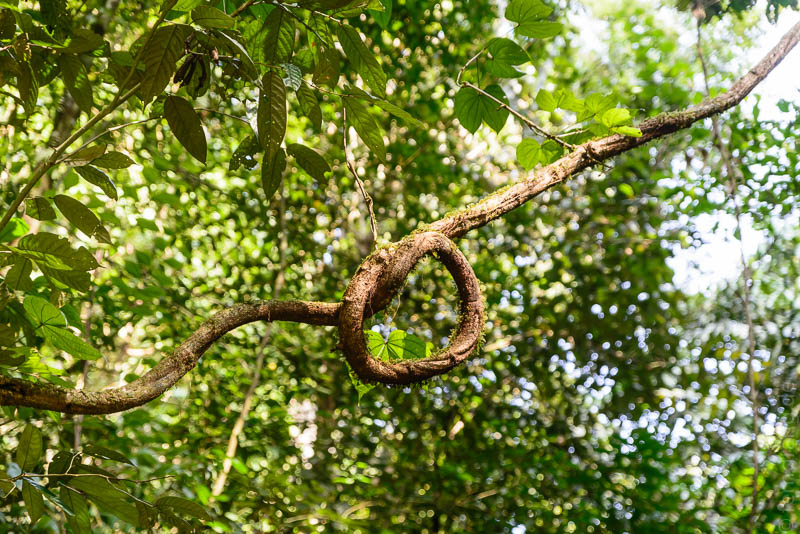
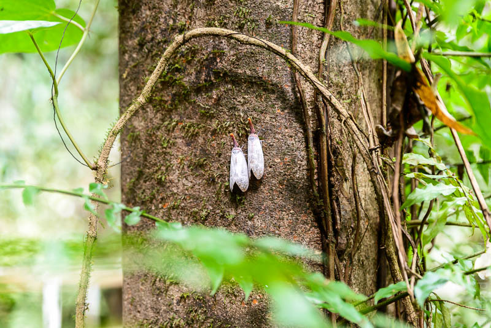
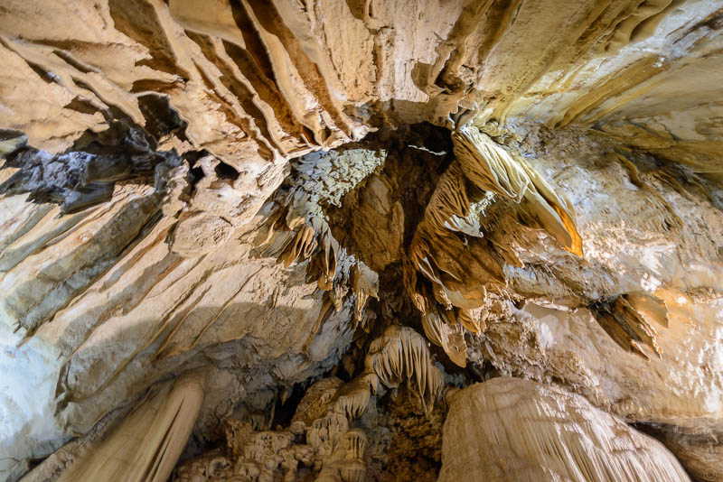
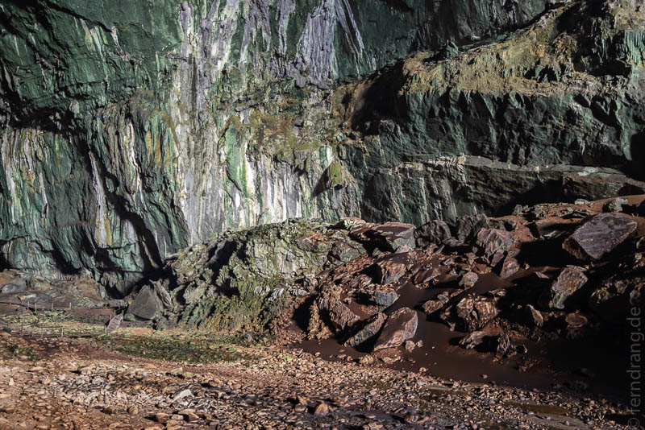
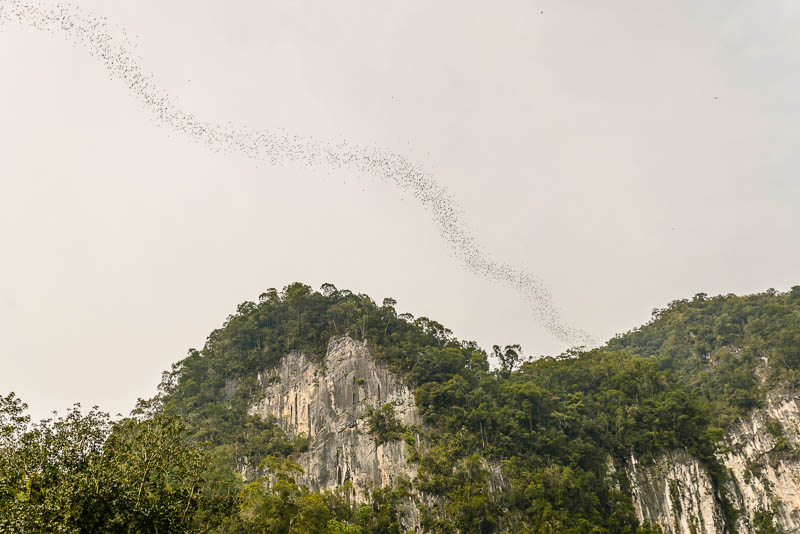

Der Weg nach Mulu begann mit der beunruhigenden Nachricht auf der Abflugsanzeige, dass für unseren Flug das Boarding beendet sei. Wir dachten eigentlich, früh dran zu sein, weil das Taxi so gut durchgekommen war. Aber wir wussten nicht, dass sich der Flugplan seit der Buchung geändert hatte: Neun statt zwölf Uhr. Nach einigen panischen Minuten sind wir auf einen anderen Flug umgebucht worden, der nur zwei Stunden später ging. Was wir nicht wussten, war, dass wir nur zehn Minuten zwischen Landung und Anschlussflug hatten. Wieder Stress, aber letztlich sind wir samt Gepäck in Mulu angekommen.
Wegen der Verspätung gab es für uns keinen Zwischenstopp in der Benarat Lodge mehr. Stattdessen sind wir direkt in den Mulu Nationalpark gefahren. Da Mulu aus fast nichts anderem besteht als Park und Flughafen, war das eine Fahrt von fünf Minuten. Der Park beginnt hinter einem Fluss; über eine Hängebrücke gelangt man hinein. Im Park wird großen Wert auf den Status als Weltnaturerbe gelegt, was auf jedem Schild wiederholt wird. Das Besondere hier sind die vielen Höhlen, die Rekorde in allen Kategorien brechen: Die höchste Passage in einer Höhle, der längste unterirdische Fluss, die breiteste Passage, spätestens "das größte Luftvolumen in einer Höhle" beendet die Begeisterungsfähigkeit für Höhlenrekorde. Später konnten wir aus eigener Anschauung noch selbst den Rekord für "den stinkensten Berg Fledermausscheiße in einer Höhle" hinzufügen.
Die Wege zu den naheliegenden Höhlen führen sehr bequem ebenerdig über Holzplanken durch den Regenwald. Auf dem Weg sieht man schon die ersten interessanten Insekten und hört natürlich eine Menge von ihnen. Weniger interessante Insekten wie Moskitos sind leider auch in rauen Mengen zu erleben. Nach knapp einer Stunde gelangt man zur Deer Cave und zur Lang Cave, über deren Etymologie der Führer sehr langweilige Geschichten erzählt hat. Die Rekordhöhlen sind in der Tat ziemlich groß. Innen sind Stege und Treppen, die auf und ab durch zahlreiche Kammern führen. Die größere Deer Cave ist so breit, dass man darin ein Fußballfeld anlegen könnte. Das wussten die ca. 3-4 Millionen Fledermäuse allerdings zu verhindern, in dem sie den Höhlenboden in eine braune Mondlandschaft verwandelt haben. Dort, wo der Steg fast auf Bodenniveau kommt, brennen einem die Augen und der Ammoniakgeruch verschlägt einem den Atem (Rekord!). Am Ende der Höhle öffnet sich ein malerisches Regenwald-Panorama, das Garden of Eden genannt wird. Pünktlich zum Einsetzen der Dämmerung haben wir die Höhle verlassen. 60 Meter über uns taten die Höhlenbewohner das Gleiche. Ein Dichter, schwarzer Strang aus Fledermäusen schlängelt sich hier jeden Abend aus der Höhle quer über den Himmel, der über 20 Minuten nicht abreißt.




